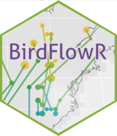

Get eBird model coverage from a BirdFlow model
Source:R/get_ebird_coverage.R
get_ebird_coverage.Rdget_ebird_coverage() retrieves the per-timestep eBird model coverage
stored in a BirdFlow model. Each cell–timestep combination records whether
that cell fell within eBird's modeled extent at that timestep; eBird 2023
onward uses NA for cells with insufficient data (distinct from cells with
zero abundance).
Value
NA (with a warning) if the model lacks coverage metadata.
Otherwise the return type depends on format:
"SpatRaster"returns a multi-layer terra::SpatRaster with one logical layer per timestep. Layer names match the timestep labels (e.g."t1","t2", ...)."array"returns the raw 3-D logical array[row, col, time]as stored inmetadata$ebird_coverage."dataframe"returns a long data.frame suitable for plotting withggplot2::geom_raster(), with one row per cell × timestep and columns:row,col— raster row and column indices.x,y— cell-center coordinates in the model CRS.i— location index inbf;NAfor cells outside the mask.timestep— timestep label (e.g."t1").coverage— logical coverage value.
Details
Coverage metadata is captured by preprocess_species() and is absent from
models preprocessed before BirdFlowR 0.1.0.9081. For such models
get_ebird_coverage() returns NA with a warning.
See also
preprocess_species() which captures this metadata,
get_mask() for the static model mask.
Examples
if (FALSE) { # \dontrun{
bf <- preprocess_species("amewoo")
cov <- get_ebird_coverage(bf) # SpatRaster, one layer per week
arr <- get_ebird_coverage(bf, "array") # raw 3-D logical array
df <- get_ebird_coverage(bf, "dataframe") # long data frame for ggplot2
} # }